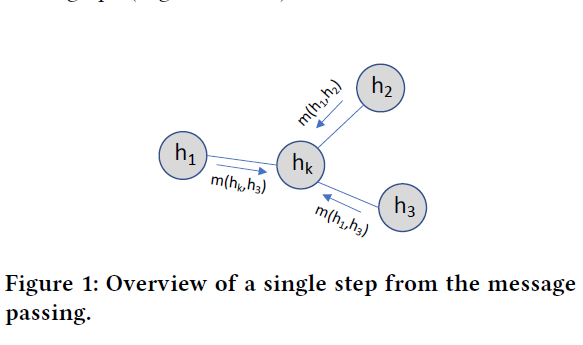
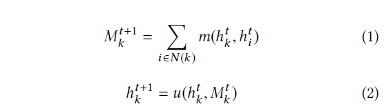
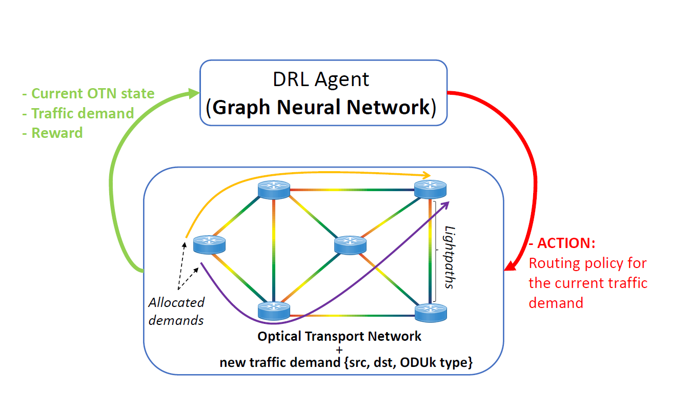
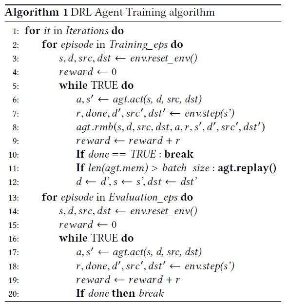
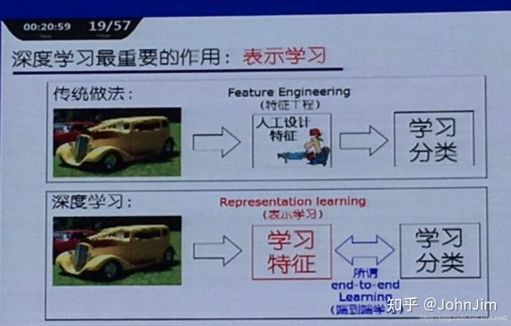

强化学习论文阅读（一）
GNN + RL
Deep Reinforcement Learning meets Graph Neural Networks: An optical network routing use case
摘要
最近在深度强化学习(DRL)方面的进展显示了决策问题的显著改善。网络社区已经开始研究DRL如何为诸如路由之类的网络优化问题提供一种新的解决方案。然而，大多数最先进的基于DRL的网络技术不能推广，这意味着它们只能在训练期间看到的网络拓扑上运行，而不能在新的拓扑上运行。这一重要限制背后的原因是，现有的DRL网络解决方案使用标准的神经网络(例如，完全连接)，不能学习图形结构的信息。本文提出将图神经网络(GNN)与DRL相结合。GNN最近被提出用于图形建模，我们的新型DRL+GNN体系结构能够学习、操作和推广到任意网络拓扑。为了展示它的泛化能力，我们在光传输网络(OTN)场景中评估它，其中代理需要有效地分配流量需求。我们的结果表明，我们的DRL+GNN代理能够在训练期间未见的拓扑中取得优异的性能。
**Optical Transport Network(OTN)**：光传送网(OTN)是以光的波分复用(WDM)技术为基础、在光层组织网络的传送网。由于在网络上传送的IP业务和其他基于包传送数据业务的爆炸式的增长，对传输容量的要求在不断迅猛增加，密集波分复用(DWDM)技术和光放大器(OA)技术的成熟和应用使传送网正在向以光联网技术为基础的光传送网发展。
介绍
现有的基于DRL的解决方案在应用于与网络相关的场景时仍然不能泛化。这妨碍了DRL代理在面对培训期间未见过的网络状态时做出正确决策的能力。
这种强大的限制背后的主要原因是计算机网络基本上是用图形表示的。
近年来，图神经网络(GNN)被提出用于对图进行建模和操作，以实现关系推理和组合推广。换句话说，GNN有助于学习图中实体之间的关系以及组成它们的规则。
具体来说，DRL代理使用的GNN是受到消息传递神经网络[1]的启发。利用这个框架，我们设计了一个能够捕获网络拓扑上路径和链接之间关系的GNN
Message-passing Neural Networks: [1]Justin Gilmer, Samuel S Schoenholz, Patrick F Riley, Oriol Vinyals, and George E Dahl. 2017. Neural message passing for quantum chemistry. In Proceedings of the 34th International Conference on Machine Learning- Volume 70. JMLR. org, 1263–1272.
Bellman equation：
背景
本文提出的解决方案结合了两种机器学习机制。首先，我们使用图神经网络(GNN)来建模计算机网络。其次，我们使用深度强化学习(DRL)来构建代理，学习如何有效地按照特定的优化目标运行网络。
Message Passing Neural Networks (MPNN) are a well- known type of GNNs that use an iterative message-passing algorithm to propagate information between the nodes of the graph.


Markov Decision Process (MDP) 马尔可夫模型
Optical Add-Drop Multiplexer (ROADM) 光分插多路复用器

DQN algorithm:
[1] Volodymyr Mnih, Koray Kavukcuoglu, David Silver, Alex Graves, Ioan- nis Antonoglou, Daan Wierstra, and Martin Riedmiller. 2013. Playing atari with deep reinforcement learning. arXiv preprint arXiv:1312.5602 (2013).
算法
Our agent implements the DQN algorithm [14], where the q-value function is modelled by a GNN.

环境
To simulate the environment, we implemented the env.step() and env.reset_env() functions in the Gym framework [4].
[1] Greg Brockman, Vicki Cheung, Ludwig Pettersson, Jonas Schneider, John Schulman, Jie Tang, and Wojciech Zaremba. 2016. OpenAI Gym. arXiv:arXiv:1606.01540
hyperparameter: 超参数
The optimizer used is a Stochastic Gradi- ent Descent [3] method with Nesterov Momentum [23].
“Shortest Available Path” (SAP) policy
RAND policy
load balancing policy：负载均衡策略
总结
利用GNN作为DRL的输入完成对DRL在拓扑结构上的泛化应用
Graph Convolutional Policy for Solving Tree Decomposition via Reinforcement Learning Heuristics
树分解(TD)是分析复杂性和图的拓扑结构的中心。
Independent Set, Clique, Satisfiability, Graph Coloring, Travelling Salesman Problem (TSP)
The Tree Decomposition (TD)
提出了一种学习树分解问题启发式的方法，该方法比简单的多项式求解器更精确和更短的解决时间。
我们利用图卷积网络(Kipf和Welling, 2016)对嵌入方法进行了说明。最后，我们在强化学习框架中阐述了问题。
通俗地说，树分解度量给定图对树的重复程度
S2V-DQN
QuickBB by (Gogate and Dechter, 2012),
Euclidean TSP
总结
我们提出一个模型，可以直接学习如何解决这个组合优化问题使用单一的图训练。训练过程也可以使用大量的图来执行，但是这个工作的目的是展示一个简单的agent在单个图上训练的泛化能力。研究的视角是基于强化学习的启发式和局部搜索方法的结合。
NP Problem
P问题：一个问题可以找到一个能在多项式的时间里解决它的算法。
eg. 最短路径问题，最小生成树问题…
NP问题：可以在多项式的时间里验证一个解的问题。
eg. 哈密顿路径，哈密顿回路…
哈密顿回路就是NP问题，这个问题现在还没有找到多项式级的算法，但是验证一条路是否经过了每一个顶点非常容易。
启发式算法
启发式算法（heuristic algorithm)是相对于最优化算法提出的。一个问题的最优算法求得该问题每个实例的最优解。启发式算法可以这样定义：一个基于直观或经验构造的算法，在可接受的花费（指计算时间和空间）下给出待解决组合优化问题每一个实例的一个可行解，该可行解与最优解的偏离程度一般不能被预计。现阶段，启发式算法以仿自然体算法为主，主要有蚁群算法、模拟退火法、神经网络等。
1 | 遗传算法：是根据生物演化，模拟演化过程中基因染色体的选择、交叉和变异得到的算法。在进化过程中，较好的个体有较大的生存几率。 |
表示学习(representation learning)
表示学习虽然从结构上讲只是数据的一个预处理手段，但是正如“工欲善其事，必先利其器”一样，它的出现提供了进行无监督学习和半监督学习的一种方法。其重要性不言而喻，以至于在花书中被单独列出来作为一章。表示学习一个比较典型的方法就是自编码器，有兴趣的可以自查。

ADEPT学习法
英语笔记
decision-making problems: 决策问题
the networking community: 网络社区
state-of-the-art: adj. 最先进的；已经发展的；达到最高水准的
automated control problems: 自动控制问题
shogi：围棋
self-driving networks: 无人驾驶的网络
fully- connected, Convolutional Neural Networks: 全连接，卷积神经网络
relational reasoning and combinatorial generalization: 关系推理和组合推广
In Proceedings of: 在学报
the generalization capabilities: 泛化能力
tabula rasa: 白板（没有写字的书写板）；白纸状的心灵
differentiable functions：可微函数
pseudo-code：伪代码
nested loops : 嵌套循环
end-to-end：端到端
ongoing work：正在进行的工作
acknowledgments：致谢；鸣谢
combinatorial problem：组合问题
non-Euclidean graphs: 非欧几里得图
existing state：现有的状态
approaches to fundamental：基本方法
domain-specific knowledge：特定领域知识
dust off：抹去灰尘
exploitation（利用） 和 exploration （探索）